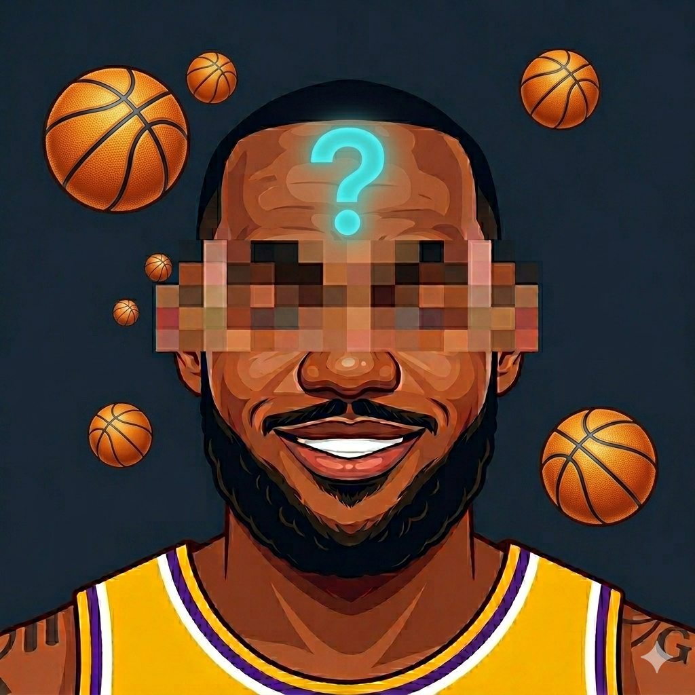

03 — Portfolio
Published apps

VitaGlow – AI Vitamin Tracker
AI-powered vitamin and nutrient tracking. Take a photo of your meal and get a full breakdown instantly.

Calorie Counter - AI
Effortless calorie tracking powered by AI. Snap a photo of any meal to instantly log calories and macros.

Amulet: Evil Eye Widget
Ancient protection symbols as beautiful Home Screen widgets. Evil Eye, Hamsa, Eye of Horus and more.

Footy Quiz: Guess the Player
Test your football knowledge — guess the player by hints, stats, and clues.

Hoops Trivia: Guess the Player
Basketball player quiz — guess the NBA star from hundreds of pros across 6 exciting game modes.

Case Simulator 3.0
Updated CS:GO case simulator with new design, sounds, weapon previews and expanded collection.

CS:GO Quiz Trivia
Prove your CS:GO knowledge with hundreds of trivia questions on maps, weapons, pros and history.

Fort Quiz Trivia
The ultimate Fortnite trivia quiz — skins, weapons, locations and Battle Royale events.


Case Simulator 3
The original CS:GO case opening simulator. Unbox rare skins, win Knives, and compete in Jackpot mode and on the global Leaderboard.

CS:GO Quiz
The original Counter-Strike knowledge quiz — weapons, maps, skins and esports.

GetSkins
Browse, collect and showcase CS:GO skins — your virtual inventory of iconic weapon finishes.